「正文约13300字」
作者：阿明达·M. 史密斯（Aminda M. Smith）
文献来源：Aminda M. Smith, Thought Reform and the Unreformable: Reeducation Centers and the Rhetoric of Opposition in the Early People’s Republic of China（《思想改造与不可改造者：新中国初期的教养机构与反抗修辞》）, The Journal of Asian Studies 72, no. 4 (2013): 937–958.
摘要
━━━━◆━━━━
本文考察1949年以后北京收容并改造城市「游民无产者」的档案。把这些报告同中央政府有关全国思想改造政策的指示联系起来，我指出，教养人员及其上级曾细密地讨论一类抵抗者：他们反对并公然违抗政府，但教养机构却明确把他们界定为「非敌人」。北京教养机构的经验表明，反国家却又不属于反革命的抵抗，是一个重要的象征与修辞范畴，在中共阐明自身宗旨时居于核心位置。在教养语境中，对党国的反抗构成了一条奠基性的「真理」的证据：封建主义、帝国主义和资本主义的压迫已经把中华民族伤害到如此程度，只有激进的革命性改造才能挽救它。整个1950年代，正是这种阅读和分析抵抗的方式，推动政策制定者重新界定「人民」，也重新界定那些因卖淫、乞讨和轻微犯罪而受到指控者的社会位置。
正文
━━━━◆━━━━
1950年，北京市国营妇女生产教养院里几名被收容的妓女试图逃跑（BMZ 1950a）。其中一名叫李红玉的女子甚至承认自己「恨」共产党，但教养院副院长张洁珣说，工作人员处理逃跑者和抵抗者的办法，是加强政治教育（A. Smith 2013, 108; Zhang [1950] 1988, 303）。1951年，国营青海强制劳动营的干部也报告了一起越狱未遂事件。机密内参《内部参考》记载，警方处决了这名企图逃跑者。他叫田文林，被指控为反革命分子（NCK 1951）。
按照干部的报告，这两个事件在行为层面几乎没有区别。两人都被强制关进思想改造机构，都试图从有武装士兵把守的场所逃走。然而，两份报告的语气与结局却截然不同。李红玉受到的是政治教育，其中很可能包括在同伴面前受到批评；田文林则被处决。造成这种差别的并非行为本身，而是收容人员被认定具有何种政治性质。青海监狱的看守把田的逃跑列入一系列「反革命叛乱」之中（NCK 1951）。北京教养机构的工作人员却解释说，李红玉和其他被收容妓女之所以抗拒政府管束，是因为「她们多年来一直遭受剥削和压迫」，因此「惊恐、多疑，不信任别人」（BMZ 1950b）。
由此可见，1950年代的思想改造机构至少区分了两类反国家的抵抗，也区分了两类抵抗者。如果不能依照这些范畴准确判断行为和个人，就会被视为意识形态上的偏差。思想改造工作人员站在斗争的第一线，必须「守住那条不断移动、区分革命朋友与反动敌人的细细红线」，所以他们花了大量时间讨论每一种抵抗的性质、原因以及处理方法（Dutton 2005, 4）。余凯思（Klaus Mühlhahn）指出，思想改造人员对「敌人」与「非敌人」的区分，足以在收容人员内部造成「深刻分裂」和「摩擦」（Mühlhahn 2009, 260）。
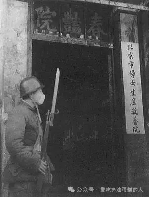
1949年，北京韩家潭原春艳院改作北京市妇女生产教养院，门前有持枪人员值守。图源：北京警察博物馆；高清版本藏于 Wikimedia Commons。
亚洲研究领域的学者尤其积极地参与了一系列更广泛的学术争论：抵抗究竟有哪些可以被说出、被经验到的形式（Bianco 1999; Friedman, Pickowicz, and Selden 2005; Guha 1988; Haynes and Prakash 1991; Hershatter 1993; O’Brien and Li 2006; Perry and Selden 2000; Scott 1987, 1990; Spivak 1988; A. Yang 2007; K. Zhou 1996）。「抵抗研究」的一条核心线索，是重视把反抗视为一个对报告它的人既有用又有意义的主题。沿着这一路径，不少研究已经指出，反国家的对抗在中国共产党的政治修辞中居于核心位置。毛主义的动员力量显然依赖于识别、乃至制造那些煽动反革命的「敌人」（Dutton 2005; MacFarquhar and Schoenhals 2006; Rogaski 2002; Shapiro 2001; Strauss 2002）。施拉姆（Stuart Schram）用一句极简洁的话概括了这种在修辞上「必需的抵抗」：「毛是一个斗士，而斗士需要敌人。」（Schram 1969, 48）
然而，田文林和李红玉的材料表明，共产党干部识别出的并不只有敌人式抵抗者，也有「非敌人」式抵抗者。1950年代，毛泽东多次重申他长期以来的判断：反国家抵抗存在「两种不同类型」。在毛看来，这两类「矛盾」的「性质完全不同」，所以他主张，应采取不同的处理方式（Mao 1957b, 93）。田文林的行为被视为对抗性的、反革命的，因此招致镇压和惩罚；李红玉的行为则被界定为非对抗性的、非反革命的，理论上应当以耐心和教育来回应（BMZ 1950b; Mao 1957b; Zhang [1950] 1988）。
学界已经充分确立了毛主义「需要」反革命分子这一点。本文提出，非敌人的抵抗也具有同样「必要」的作用。
为了考察中共所说那种既反国家、又非反革命的抵抗究竟具有怎样的性质和意义，我把目光投向中共处理挑战者时最醒目的制度象征之一：思想改造机构。政府教养院的工作人员大量书写抵抗，因为他们的工作正是把抵抗变成服从。北京是一个尤其有说明力的案例：党的最高层领导人往往兼任首都市政职务，首都的经验也指导中央策略。本文因此可以把地方实践与全国政策联系起来。与其再次讨论那些关押被指控为敌人的人的劳改营——这些机构已经得到充分研究——本文关注的是由妓院和救济院改成的收容机构。被关在里面的是妓女、乞丐、游民和小偷。按照看管者的说法，1949年这些人曾激烈抗拒国家，有时甚至真的妨碍了国家行动，但这种反抗并没有被划为反革命。
北京的经验说明，李红玉这类「非对抗性」抵抗者在中国共产党的政治修辞中占据一个基础而明确的位置。他们证明了一条革命叙事赖以成立的「真理」：封建主义、帝国主义和资本主义的压迫已经把中华民族伤害得如此之深，只有彻底的革命性改造才能把它拯救出来。不过，这种叙事同时包含另一个承诺：革命和改造确实能够带来拯救。因此，教养人员预期，随着思想改造推进，这种非敌对性质的抵抗终将消失。
作为受害结果的抵抗
━━■━━
1949年初，中华人民共和国首任公安部部长罗瑞卿一面规划全国社会控制工作的方向，一面也在首都部署最早的一批实践。其中一项迫切任务，是处理数量庞大的「游民无产者」。罗瑞卿认为，妓院、游民团伙和盗窃集团构成威胁内部安全的政治问题（Dutton 2005, 150）。与此同时，它们又被视为革命前「旧社会」留下的灾难性社会问题。毛泽东1939年曾说：「中国的殖民地和半殖民地地位，造成了农村和城市中广大的失业人群。他们没有正当的谋生道路，只能被迫从事不正当职业以维持生活。」（Mao 1939, 7）
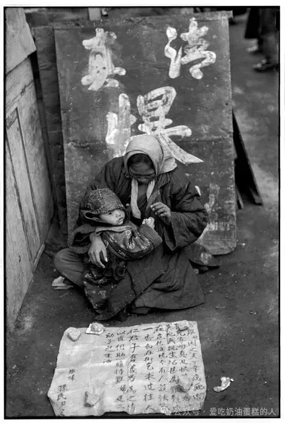
1948年12月，北平街头的贫困人口。1949年以后，城市乞讨、流亡和无固定职业人口逐渐成为社会救济与收容改造工作的对象。摄影：亨利·卡蒂埃-布列松（Henri Cartier-Bresson）。图源：马格南图片社。
毛泽东和北京市最高领导人、政治局委员彭真都早已主张，游民无产者不能被当作敌人，但这个群体具有双重性质：他们既是劳动群众中遭受压迫的一部分，又是不可靠的、带有「寄生倾向」的成分。正是这种「两面性」，使他们在革命与反革命之间「摇摆」（Mao 1939; Peng 1941, 5）。早在1928年，毛就坚持认为，要争取这些偏离正轨的无产者，「唯一的办法」是进行深入的思想改造，「使这些成分发生质的变化」（Mao 1928; Schram and Hodes 1992, 3:94）。
按照这一思路，罗瑞卿与北京市最高领导机构市委共同推进「收容改造」，对象包括「妓女」和「乞丐」。前一个范畴只指以出售性服务为生的女性；「乞丐」则是一个宽泛的简称，教养机构干部用它指称一批异质人群，包括「乞丐、小偷、扒手和散兵」，也包括「灾民」「流氓」与「游民」（BMZ 1949e; Cao 1994; Li Xiaowei 2007, 61; ZBQ 1991, 466）。到1950年底，北京市公安局约抓获八千名嫌疑人。经过审查和处理后，民政局把五千多人送进收容机构，其中有八所妓女教养机构和五所乞丐教养机构（BGA 1950, 1988; BMZ 1949a, 1950b）。
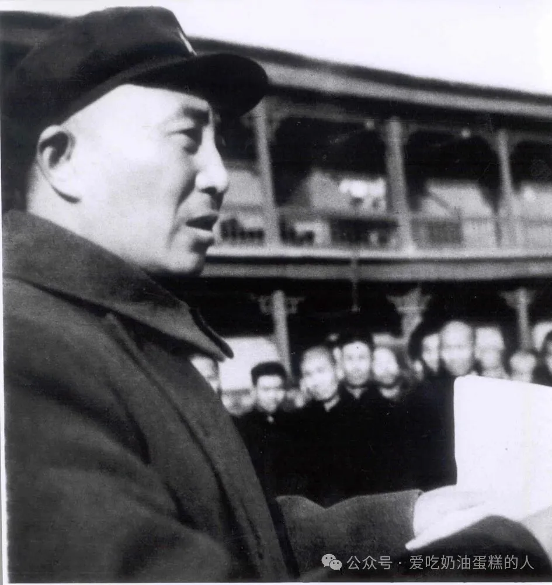
1949年公安部部长兼北京市公安局局长罗瑞卿给妓院老鸨训话。
这些机构的工作人员来历各异，有资深革命干部，有刚毕业的大学生，也有被推翻的国民党政府旧雇员。干部把日常工作写成一份又一份报告，上交民政局和公安局；两局再向中央部委和北京市委递交自己的报告。此后，同类文件继续上送到周恩来主持的政务院，以及毛泽东主持的中共中央。材料沿着行政链条逐级修改、编辑，但在「收容改造」这个问题上始终有一点完全一致：游民无产者并不欢迎自己被关起来。
民政局报告说，乞丐刚被送入教养机构时「一片惊慌。他们打架、逃跑、装疯」。因乞讨或扒窃被抓进来的年幼儿童据说会嚎哭、用拳头捶地，哀求工作人员让自己回家（BMZ 1949a, 1949f）。老革命谭莹退休后重新出来参加收容改造工作。她回忆，多数干部完全没有准备好应对教养机构里的「混乱」：愤怒的收容人员藏起来、装死、翻墙，甚至攻击看管他们的人（BGA 1988; Liang 1999, 9）。1949年时二十五岁的干部裴棣回忆，收容工作的第二天，一名妓女掀开自己的晨衣，故意向守门的士兵裸露身体。士兵转过脸去时，「那个半裸的妓女大喊：『姐妹们快跑！解放军不敢朝我们开枪！』」裴棣说，收容人员随后冲上街头逃走了（Yang Min 2010, 76）。
1949年12月，民政局这样描述收容工作最初几天的情形：「我们的干部少，又没有经验……收容人员夺了权。收容人员成群逃跑。直到打死一个人，局面才被压下去。」（BMZ 1949a）事实上，这个场景几乎是全国教养叙述里的固定桥段：刚被关起来的游民无产者闹事、逃跑，另一些人绝食、斗殴。无论第一手材料还是后来的研究，这类描写都反复出现（BGA 1949; Hershatter 1997, 312–13; Li Peiyi 1987; Li Runshan 1995, 187; Liang 1999, 9; Mi and Gao 2007, 42; TMZ 1951; Yang Min 2010, 76）。这种在文本中无处不在的抵抗，必定部分反映了教养人员确实面对过的真实反对。干部也被要求报告问题。北京市公安局命令下属总结「北京各项工作的每一阶段」中的「全部事实」，标准化工作报告的格式又进一步强化了这种要求：报告先总结成绩，然后便「转入批评模式」（Diamant 2009, 427; see BGA 1949）。
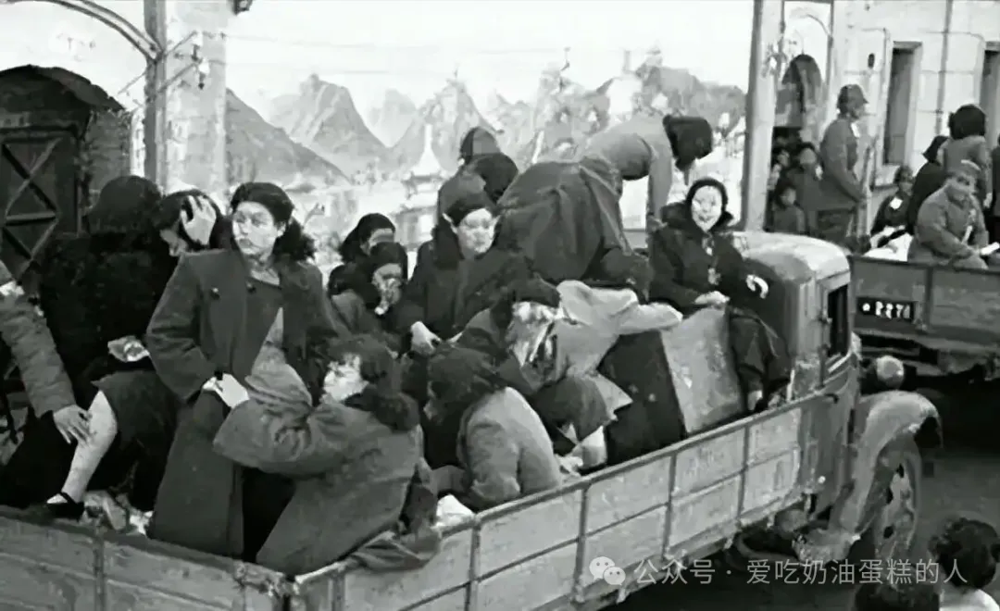
1949年11月21日，北京封闭妓院行动中，被集中收容的妓女乘汽车前往妇女生产教养院。摄影：庆瑞。图源：人民网，原载《北京封闭妓院纪实》相关历史图片。
但干部并不只是记录「有人抵抗」这个事实。下文将会看到，他们还以一种特定方式解释抵抗。他们把收容人员的「不良行为」归因于街头或妓院生活造成的恶果，坚持认为这些人的过去经历与他们对国家的违抗之间存在直接联系。换言之，干部不只是叙述抵抗，也把抵抗拿来使用。这样阅读、书写反抗，使教养人员能够论证思想改造既有必要，也合乎正当性。他们对抵抗原因的解释，反过来证明中华民族的许多成员确实出了严重问题，从而为党改造这些人提供理由。
北京市领导在谈论教养机构里的「混乱」时就使用了这种修辞策略。1949年7月，北京市委写道，乞丐和游民之所以逃跑、同干部打架，是因为「他们全都怕得要命」：
他们害怕事情还会像日本人和国民党抓乞丐时那样。他们不但被强迫做苦工，还被关起来，挨饿，甚至遭到殴打和虐待。那些家里还有人需要养活的乞丐尤其［害怕］。他们怕被抓以后再也回不了家，再也见不到父母、妻子和孩子。（BSW 1949b）
市委说，刚被收容的妓女也有相似的恐惧，因为她们受到妓院老板「恶毒宣传」的影响。流言称，妓女会「被配给别人做妻子，被送给红军战士，或者被送到西北垦荒」（BSW 1949a）。但在教养人员看来，抵抗并非只来自错误信息。他们还主张，帝国主义、封建主义和资本主义在心理与情感上给收容人员造成了严重创伤。干部描述那些反抗激烈的妓女时说，她们的「怀疑和焦虑」源于长期而深重的压迫，以至于「处处都觉得别人是在耍花样，不容易相信人」（BMZ 1950b）。
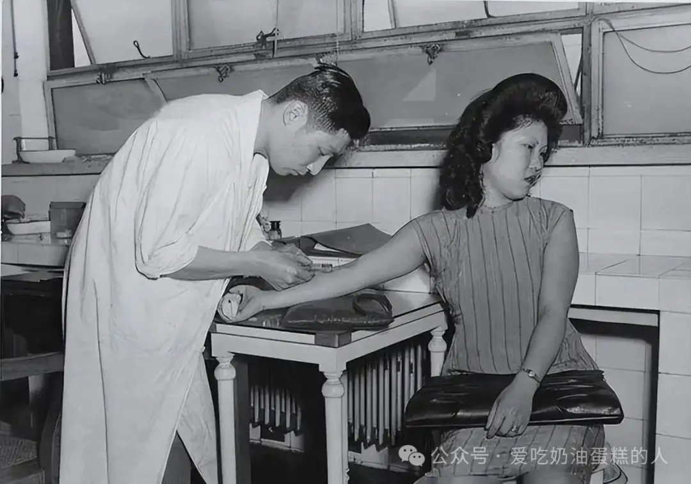
1949年，北京妇女生产教养机构内，一名被收容女性接受抽血检查。封闭妓院后，北京组织医护人员进入教养院，对被收容女性进行集中性病检查与治疗。图源：历史照片公共档案 PICRYL。
1949至1950年间，教养机构不断把收容人员的攻击性和敌意报告给民政局与公安局，但干部坚持说，他们并没有以暴力回敬暴力。相反，他们声称自己遵循北京市地方规定以及内务部制定的全国教养方针。最重要的一条，是把收容人员视为「劳动群众的一部分」，是「几千年的封建、官僚统治把他们逼到破产失业境地」的人（BMZ 1949g; DZG 1994, 82; MZB 2003, 4–5）。北京市委明确要求，不得把乞丐和妓女当作敌人，教养机构在行政和空间上也同监狱分开。北京和多数城市一样，由民政部门负责游民无产者，公安机关负责反革命分子和罪犯（DZG 1994, 74, 92）。全国各地公安机关都参与民政系统的教养工作，但大多数教养机构的工作人员主要还是教师和社会工作者。地方与中央官员培训这些人员时，要求他们运用提高觉悟和富于同情的劝导（BMZ 1949d; BSW 1949b; DZG 1994, 85; Hershatter 1997, 309–10; Li Peiyi 1987, 187–89; A. Smith 2013）。
后来担任教育部副部长的杨蕴玉，是当时负责北京妓女改造工作的老党员。她后来接受采访时说，她和工作人员努力让收容人员相信：革命前的社会制造残酷和剥削，新社会主义社会则会培育团结与互助（Mi and Gao 2007, 43）。对被收容的乞丐，教养人员传达的信息也大致相同：「干部和乞丐经常一起过日常生活……有什么话就说什么，不要憋着。我们安慰乞丐，教育乞丐，替乞丐解决问题。」（BMZ 1949f）
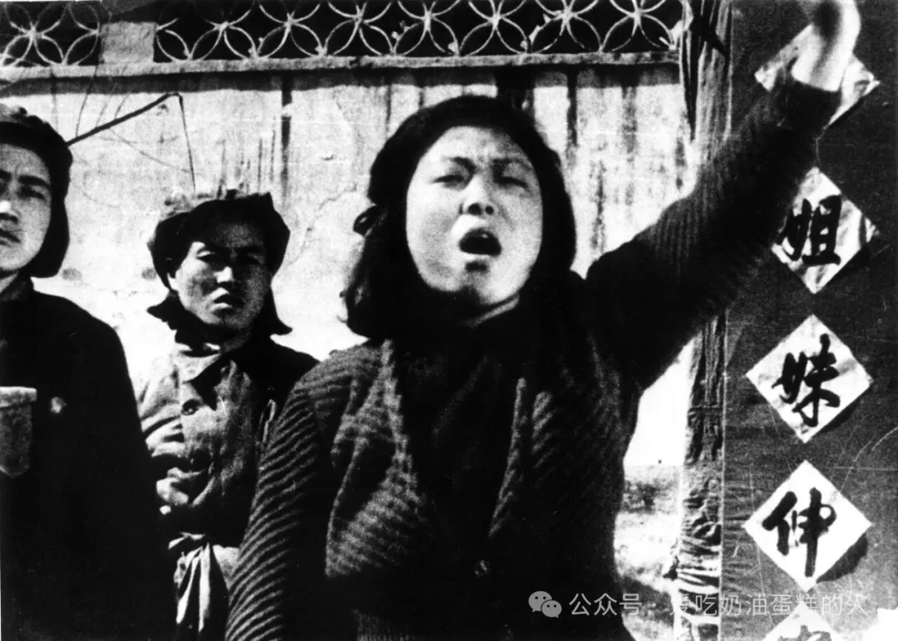
1949年，北京，被收容女性在教养过程中控诉妓院老板、领家。图源：北京警察博物馆馆藏。
1949和1950年，教养人员声称收容对象顽固，甚至以暴力抵抗改造，但他们同时声称，这种抵抗来自恐惧和觉悟低，因此已通过富于同情的教育得到恰当而有效的消除（A. Smith 2013, 108–14）。1949年5月，教养人员报告说，乞丐处于「情绪极不稳定」的状态，「绝对不愿学习」。但「随着干部提高他们的觉悟，他们对学习的态度逐渐改变」。一个月后，这些乞丐据说已经「努力学习」，还「经常热心提出意见」（BMZ 1949a, 1949f）。1950年，干部声称自己也安抚了那些好斗的妓女：「我们解释政府为什么封闭妓院，也解释政府对妓女的政策……我们用实际行动证明自己的话。」他们说，自己以「真诚和同情温暖了」妓女的心，「打破她们的怀疑，把疑虑变成信任……现在大多数人都在热心学习。院内秩序稳定。」（BMZ 1950b）北京市委向中共中央报告时，把这些叙述节录进去，将因恐惧而爆发的骚乱同后来出现的团结气氛并置。市委声称，带着关怀的觉悟教育通过「消除收容人员的焦虑」，在机构内部营造出「和谐气氛」，已经成功消除了大部分抵抗（BSW 1949a, 1949b）。
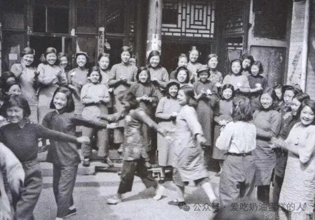
1950年4月，北京市妇女生产教养院，学员与干部一起扭秧歌。摄影：钱嗣杰。图源：《人民画报》历史照片，后收入钱嗣杰摄影资料，新浪历史图片转载。
北京开始收容改造两年以后，教养人员还没有消灭所谓游民无产者问题，但干部和官员依旧几乎完全把抵抗解释为旧社会摧残留下的残余。1951年6月，北京市民政局局长董汝勤向北京市人民政府报告说：「我们在收容乞丐过程中遇到了不少问题。乞丐在旧社会长期流落街头，由此形成了一些不良思想。」要解决这些问题，他继续说，「必须长期收容，并进行较长时期的教养改造」（Dong 1951）。
教养机构干部沿用董汝勤的说法。他们继续通过强调收容人员在旧社会遭受过多么严重的压迫来解释抵抗，由此也再次确认共产党关于旧制度、旧机构确实伤害了中国人的判断。比如，1951年在一次为乞丐提供职业训练的工作中，一名民政干部这样描述「学员」的思想：「他们的阶级成分复杂。好逸恶劳，贪图安逸，却轻视劳动。」（BMZ 1951b）一些「乞丐知识分子在道理上接受［加入劳动队］，但由于他们的思想，他们害怕吃苦」，所以拒绝参加生产。报告引述这些「乞丐知识分子」的话：「我每天看见报名表都想签……可一听见『劳动』两个字，我就生气。」（BMZ 1951b）。在干部看来，这种「轻视劳动」的倾向来自旧社会，因为那个社会把体力劳动看作低贱职业，而他们接受教养，正是为了改掉这种错误观念（A. Smith 2013, 139–74）。
同一份报告还谈到从农村逃荒来到北京、因乞讨或扒窃被抓的灾民。干部坚持认为，这些人被列入教养对象，并非因为绝境逼迫他们采取极端手段，而是因为他们已经形成了一种顽固倾向：宁愿依赖救济或犯罪，也不愿依靠自己的劳动生活。报告引用一名灾民的话来证明这种倾向确实存在：「冬天没事做，我就进城，到［教养机构］混着。等拿到一身新衣服，开春我就回家。」报告把这段话与其他类似事例并列，声称它们「充分说明他们［收容人员］的寄生思想相当严重」（BMZ 1951b）。
同年，内务部要求教养机构开展「爱国主义教育」，在全国支持抗美援朝战争的动员中「揭露美帝国主义的罪恶」。工作人员据此设计课程，要让收容人员「分清敌我……反对美国……壮大抗美援朝的力量」（BMZ 1951a, 1951b; MZB 2003）。那些不同意这种爱国主义原则的人的话，又被拿来说明这种教育为什么必要，也用来证明他们确实受到了多年帝国主义剥削的影响。比如，一名收容人员据说曾说：「美国有原子弹，我们怎么也比不过。中国应该向美国学习。」报告撰写者由此断定，收容人员抱有一种伤害民族尊严的信念，认为中国「民族低劣」，也就是「中国不好，外国好」（BMZ 1951b）。
新成立的中华人民共和国政府要求被关押和未被关押的公民都把「自己的个人叙述整理进解放前受苦和解放后获得机会的范畴中」（Hershatter 2002, 58）。这种「旧社会／新社会」叙事，构成「1949年以后政权合法性赖以存在的主要奠基石」（Cohen 2003, 33）。而这种时间结构中又嵌着一个关于革命性社会改革之必要性的主张，其中包括以收容为基础的教养。共产党的动员语言宣称，中国迫切需要彻底的社会改造。说到底，这种革命号召能否成立，取决于另一个主张是否属实：中国人已经病了，而改造与教养是唯一的治疗办法。北京的教养人员至少试图在自己管理的收容人员身上证明这个诊断。
不过，对收容人员反抗性质及意义的判断还包含一个关键推论。抵抗对于这套修辞固然「必要」，但同样必要的是，收容人员最后必须停止抵抗。中共宣称自己掌握解决中国最严重问题的办法。既然教养人员几乎完全把收容人员的违抗归因于那些旧社会问题，他们实际上也就在说：这种抵抗将是暂时的。教养人员在书写自己的工作时确实反复声称，带着关怀的觉悟教育就是抵抗的解药。无论基层干部还是北京市人民政府成员的报告，都像张洁珣1950年所写的那样坚持：「仅仅经过一般教育，绝大多数收容人员就发生了深刻变化。」（Zhang [1950] 1988, 310; see BMZ 1949d, 1949e, 1949f, 1950b, 1950e; BSW 1949a, 1949b; BZF 1950a, 1950b）
他们经常用「大多数」「绝大多数」来修饰自己的成功叙述。1949至1951年间，如果教养人员曾怀疑某些游民无产者最终可能拒绝改造，干部和官员似乎也没有花多少精力，把这些潜在的「不可改造者」从更大的收容群体中单独辨认出来；这个群体的所有人都被描述为行为恶劣、充满敌意、顽固不驯。相反，当时关于改造的讨论主要强调积极成果：哪怕一开始具有攻击性、公开对抗的收容人员，在富于同情的干部提供清楚的信息并进行教育之后，也变得服从而积极。在干部和上级的报告中，抵抗几乎总是「前后对照」的上半段，用最初的顽抗衬托后来改造的成功。1949年，北京市委告诉中共中央：「经过教育以后，即使极少数态度十分蛮横的［收容人员］，也不再公开反抗。」（BSW 1949a）
当然，即使在这些已经经过修饰的报告里，也有大量证据指向早期教养机构内部更阴暗的现实。上级经常指控教养工作人员殴打、羞辱收容人员，甚至把人吊起来，乃至杀害（BJC 1953; BJJ 1953a, 1954b; BMZ 1949e, 1950d; BSW 1949b; Chen Qiyuan 1951; NCK 1952a, 1952b, 1953a; 伍云甫 1953）。不过，这些材料中呈现的理想化图景——富于同情而有效的改造——仍然值得重视。因为在短短几年之后，官方对教养实践的说法就发生了显著变化。最初，国家工作人员把面向游民无产者的较温和改造，同面向反革命分子等敌对抵抗者的严厉处置区分开来（Dutton 2005, 150; Hershatter 1997, 310; Huang and Wang 2010; Liao 2009a, 28; Ruan 2008, 159; A. Smith 2013）。到了1957年，新近制度化的劳动教养几乎把这一区分抹平了，哪怕在最理想化的官方文本中也是如此。
未能改造
━━■━━
到1953年，人民政府已经在全国设立920所教养机构，工作人员超过一万零七百人，收容的游民无产者人数不断变化，大体在五十万左右（伍云甫 1953; ZBQ 1991, 466; ZMD 2003, 4–5）。北京民政局的一份周报称，截至1953年5月3日，北京各教养机构里仍有二千三百多名收容人员（BMZ 1953b）。仅4月份一个月，又新收进175人（BMZ 1953b）。中央各部委对这些数字并不满意（Renmin ribao 1953; 伍云甫 1953）。革命后的国家重建本已耗资巨大，朝鲜战争又带来沉重支出，农业生产也不尽如人意。教养机构因此同许多昂贵项目一道受到批评，连中央社会救济委员会也开始要求大幅压缩社会服务预算（Zhao 1953）。
到了1953年，北京已经多次调整收容改造政策，试图缩小「适合收容的对象」范围，简化收容人员的处理程序，并保证这些人能够尽快完成改造、加入生产队伍（BZF 1951; 伍云甫 1953; Zhao 1953）。早在1951年，正式收容规定里就增加了一条：「凡有劳动能力者，必须接受劳动改造和教育。不服从者，视情节轻重予以处分。」（BMZ 1951a）然而整个1952和1953年，北京市公安局仍不断统计街头上「层出不穷」的乞丐、妓女和小偷；民政局也经常抱怨，一些人在教养结束以后又「重操旧业」（BMZ 1952, 1953a, 1953b）。
正是在这种背景下，北京市委审查了一系列关于首都教养机构里「捣乱分子」的投诉。工作人员声称，「一部分收容人员绝对不服从干部」。不止一所教养院报告说，由于干部管不住人，本单位已经「乱成一团」（BSW 1953）。北京市委1953年的情况报告吸收并集中体现了到1950年代中期越来越常见的一种抵抗叙述。1953年报告列举的具体反抗行为，同1949年以来干部不断记录的问题本无根本差别。但早期报告通常会以一句程式化的结论收尾：「经过教育，绝大多数人都发生了转变。」1953年的市委报告却不再这么写，而是干脆说：「所内干部多次批评教育，均无效果。」（BSW 1953）
这个话语变化十分关键。它标志着新中国处理顽抗游民无产者的方式开始转向。原先那个因觉悟低而走偏的群众成员，逐渐被重新塑造成充分知情、近似罪犯的人。这个变化最终在1957年的《国务院关于劳动教养问题的决定》中定型；这套制度在本文写作时仍然有效。北京的材料说明，思想改造政策的这一重大转折在1953年已经首先发生在具体个人身上。那一年，民政系统的教养人员开始对某些收容者「放弃希望」，并执行市级机关的指示：「经过多次教育仍不改造的收容人员，应送公安局强制劳动改造。」（BJJ 1953b, 1953c）
民政系统原本就可以把收容人员交给公安机关。但1953年以前，移送报告显示，干部一般只在两种情形下采取这一步：一是有人犯了严重罪行，例如杀人；二是身份认定有误，例如本来是妓院老板，却冒充妓女，希望借此逃避更严厉的处罚（BGA 1988; BMZ 1949d, 1950b; NCK 1952b）。到了1953年，干部却开始经常报告，他们把人从名义上较为宽缓的民政教养机构移送到公安系统的监狱。新的指控是：「未能改造」。
一名叫 Lu Ming 的乞丐兼小偷就是典型例子。1953年8月，他接受教养已经一年多，但工作人员仍认为他的「思想」极端「反动」。教养人员说，Lu Ming 是一个小集团的头目，他们秘密开会，商量如何对抗干部。有一次，工作人员发现 Lu 正鼓动另一名收容人员 Fan同教养人员打斗。为了削弱 Lu 的影响，教养院负责人 Wang声称自己找 Fan 谈话，教育他服从干部的必要。Fan 据说开始「动摇」，而毛泽东就曾主张，「动摇」是成功改造之前的一个阶段（Mao 1957a）。Lu Ming 却鼓动 Fan 继续反抗。据报告，他带着明显的讽刺意味说：「既然是革命，就要革命到底。」（BMZ 1953a）
干部还记录了 Lu 的一系列其他违规，从编造个人历史到讥笑教养人员束手无策。报告说，他曾冲 Wang喊：「你连两个馒头都打不下来！」但按照教养人员自己的叙述，这些单独指控没有哪一项必然足以构成把 Lu 送进监狱的理由。干部乃至官员同样会把这种反抗性言论放在所谓「模范学员」身上，用来说明他们改造之前有多顽固。至少在纸面上，批评干部或共产党很少被规定为不可饶恕的行为（BMZ 1951b; ZNW 1953）。Lu 撒谎、违抗教养人员、挑起不和，这些行为同其他收容人员相比也算不上特别严重，那些人的「不良行为」被干部写成成功改造故事的「前传」。就在 Lu Ming 被移送的同一个月，另一份报告还认定收容人员 Li Lin 是一个同样好斗的「捣乱分子」。据说 Li「出了名地不服从」，还「挑拨离间」。但教养人员耐心继续做工作之后，他的「思想发生了转变」。报告随后把 Li Lin 树为模范：过去反抗干部的人，如今变成积极分子，还「向领导反映情况」（BJJ 1953b）。
Lu 和 Li 的故事的主要差别，在于 Li 改造了，而 Lu 继续抵抗。Lu Ming 也并非孤例。就在他被移送的那个月，民政局向公安局递交了北京各教养机构中九名「表现最坏的收容人员」材料（BMZ 1953a）。其中包括 Lu Ming、他的朋友 Zhao，以及另外七名被称作「流氓」的人，他们被指控「逃避劳动」和「抗拒管教」。这九个人的具体罪状仍然是其他收容人员也曾做过、并最终得到原谅的那些普通反抗：逃跑、斗殴、批评政府、拒绝进食、逃避劳动。但对这「九个人」而言，报告里没有随后出现的「转变」故事。民政局的结论已经变成一种越来越熟悉的套语：「这些收容人员经过多次教育仍未改造……建议送贵局［公安局］劳动改造。」（BMZ 1953a）
1953年11月，也就是北京干部把「九个人」送入劳动营三个月后，中央社会救济委员会秘书长伍云甫确认了中央政府的立场：抵抗可以容忍，但拒绝改造应当以监禁处理。他指示：「收容人员犯错误时，可采用批评、警告、记过、公开悔过等办法。但犯有严重错误，经过多次教育仍不改造者，或者有犯罪行为者，应送公安机关处理。」（伍云甫 1953）同一年，南京、郑州、上海、重庆等地经市委批准的收容规定也都写明，凡「经过多次教育仍未改造」者，应移送公安局（CQ 1953; NJ 1953; ZSH 1953; ZZ 1953）。
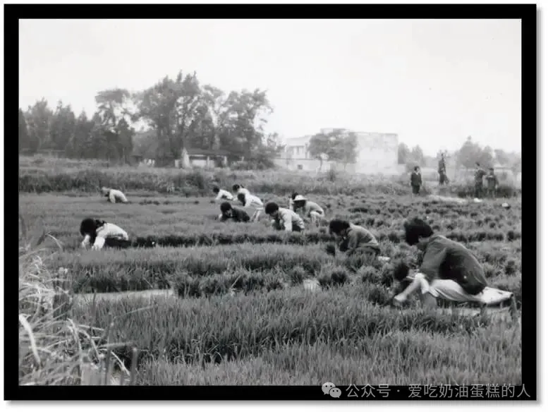
1950年代，皖南白茅岭农场的集体农业劳动。白茅岭创建初期实行「改造与安置相结合」，通过开垦、生产和教育安置来自上海的人员。图源：上海市监狱管理局。
为了表明自己贯彻了中央指示，北京市委向上级报告，到1953年底，各教养机构已经处理了首都一些最严重的「捣乱分子」，其余人的处置仍待决定。市委提到一名被称作「女流氓」的 Zhuang Ti：「Zhuang 长期不参加劳动，整天同其他收容人员打架。」市委说，干部已经多次教育她，却始终没有效果，因此「干部实在没有办法处理她，11月已请公安局将她逮捕」（BSW 1953）。报告还提到一名二十八岁的前妓女 Deng Meili，也被以类似方式移送。据教养人员说，Deng 当时在教养院公共活动室里，听见另一名收容人员 Li 笑了。她「不喜欢别人笑她」，便用水壶和顶门的木杠攻击 Li。干部把两人拉开，但当天深夜，Li 睡着以后，Deng 又发动第二次攻击，最后造成流血。报告声称这并不是 Deng Meili 第一次惹事，并说干部「已经没有办法教育她」（BJJ 1953b; BSW 1953）。
同「九个人」的情况一样，Zhuang Ti 和 Deng Meili 被逐出民政教养系统之前发生的事情，其实都相当普通。两人都被指控斗殴。可一年多以后，一名因乞讨和小偷小摸而被收容的 An Jiayin 也据说在教养机构里攻击了好几个人，其中包括自己的小组长。事实上，An 自己似乎也认为事情严重到足以被移送。干部声称，他担心要被「送法院」，于是发动绝食（BJJ 1954c）。然而，与 Zhuang 和 Deng 不同，An Jiayin 最终仍留在民政教养机构里，因为报告称，他经过教育之后「认识了错误」（BJJ 1954c）。所以，没有受惩罚却曾经抵抗的收容人员，与 Zhuang、Deng 之间真正有分量的区别，只在于干部声称前者后来服从了。
这里并不是说，教养机构里的抵抗者绝不可能因为某一个足够严重的敌对行为而被送进劳动营。伍云甫允许把犯有「严重错误」或「有犯罪行为」的人移送监狱。教养人员很可能可以主张，Lu Ming 组织小集团扰乱教养秩序，已经构成反革命行为（伍云甫 1953）。还有干部声称 Lu 在教养院里藏了一支枪，另外几名被移送者则被控「盗窃政府财物」，这些都可以归入「犯罪行为」（BMZ 1953a）。关键在于，干部并没有这样为自己的决定定性。他们说，被逐出教养机构的人之所以被移送，不是因为犯罪，甚至也不是因为一再试图反对或妨碍教养，而是因为他们对改造本身没有作出预期中的反应。
1953年，民政局档案至少记录了十五起移送监狱的个案。市社会救济分会在1954年一份半年工作报告中称，当年截至报告日期，北京教养机构共有467人出院，其中24人被移送公安机关（BJJ 1954a）。民政局后来确认了这些数字，并说明这些人都是「多次教育仍未改造」（BMZ 1954b）。如果这些数字表明只有少数收容人员被送进公安系统，那么这一点正是官方主张的重要组成部分。当时全部收容人员超过二千五百人，十八个月里被认定为「可能不可改造」的不到五十人，这就支持了教养人员一直坚持的说法：不愿改造的只是「少数坏分子」。市委1953年的总结中，「捣乱分子」可能有数百人，但教养人员声称，其中很多人对更严厉的办法作出了反应，至少在改造方面取得了一些进展（A. Smith 2013, 201）。
如果1953年仍有成千上万的乞丐和妓女被关在教养机构这一事实导致人们对教养的成效失去信心，干部和官员也没有在报告中表达这种怀疑。1953年及此后，教养人员反复以一句近乎绝望的话结束抵抗故事：「我们没有办法对付这些人。」可这并不是在承认思想改造整体上缺少有效办法。他们声称，尽管自己经验丰富、成功记录令人瞩目，却仍然「没有办法」改造某些特定抵抗者（BJJ 1954d; BMZ 1954a, 1954c）。
被质疑的不是思想改造，而是那些没有被它改变的人。
迟至1954年11月，社会救济委员会仍宣称，尽管存在抵抗和重新违法的问题，90％的收容人员已经接受干部纪律并参加生产。报告最后说：「这说明我们改造游民的办法是切实正确的。」（BJJ 1954a）
把一个人移送公安局，表明教养人员相信：民政系统那些经过反复验证的办法，在改造这个人时不会奏效。教养人员究竟怎样区分「成功改造之前的抵抗」与「顽固到足以判进劳动营的抵抗」，仍不清楚，移送决定中几乎肯定存在一定的随意性。但干部及其上级试图建立的论点十分明确：大多数游民无产者的抵抗只是受害经历的症状，不具有反革命性质；普通的、非反革命的抵抗，是可以被教养消除的。于是，如果一个抵抗者对改造没有反应，国家工作人员就会推断：他的抵抗在性质上与多数人的抵抗不同。
因此，1954年以后，教养人员并没有改变自己对「大多数」收容人员抵抗性质和解决办法的解释。变化发生在另一处。干部和官员开始强调，既然「绝大多数人」已经完成改造，那么仍被关着、或者仍从事「不正当职业」的游民无产者，就越来越可能属于难以改造的人。1956年，内务部发布关于今后「游民」工作的指示，此时「游民」已经成为一个更宽泛的行政范畴，其中也包括妓女。内务部借教养工作的「成功」反过来说明那些尚未改造者为什么格外偏离常态：
随着社会主义高潮的到来，城市就业机会大量增加。在这种新形势下，许多游民已经得到改造，并已安排或即将安排就业。从今以后，仍需安置改造的游民，主要将是那些长期不参加劳动生产、没有正当职业、又不具备就业条件的人。（ZNW 1956）
两个月后，也就是1956年9月，北京市民政局用统计数字为内务部的说法背书。报告称，从1949年5月至1956年9月，北京共收容乞丐和小偷15,670人，其中只剩2,337人还在教养机构里。这些人中有2,136人年龄过小或过大、残疾或患病，本来就难以靠自己维持生活。因此，报告说，真正有劳动能力却没有劳动的收容人员只剩201人。民政局还称，自1949年以来接受改造的一千五百多名妓女中，「绝大多数」已经参加工业或农业生产。报告甚至说，改造后的妓女和乞丐里已经有人被评为劳动模范（BMZ 1956）。
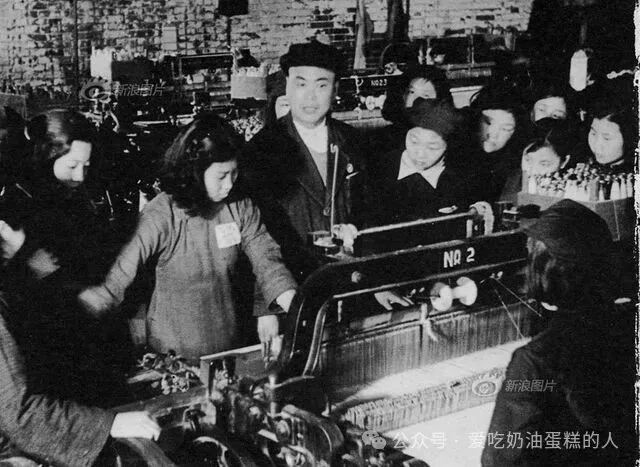
北京市妇女生产教养院学员在北京清河制呢厂学习生产技术。生产劳动被纳入教养过程，并被官方视为重新进入社会主义生产秩序的重要途径。图源：新浪历史图片资料库。
然而，同一份报告又把仍留在国家收容体系里的人描述成格外顽固的一群：「教养机构内部仍有许多问题……［收容人员］保留着旧习气……我们没有有效办法制止。」（BMZ 1956）即使到了1956年，「未能改造」仍不是一项不可撤销的定性。教养人员仍保留一种可能性：某人的不良行为，未来也许会成为成功改造故事里那个「以前」。一些女性经过六年多教养后仍「从事非法卖淫」，干部报告此事时还承认，经济困难和干部工作的错误都可能是部分重犯行为的原因（BMZ 1956）。然而，尽管没有任何判断是最终的，干部及其上级对那些迄今仍未改造的游民无产者今后获得改造的前景，已经明显相当悲观。
1957年8月3日，国务院发布具有里程碑意义的《关于劳动教养问题的决定》，把「顽固不化」正式制度化为可以受到惩罚的过错。「屡经教育仍不改正者」被明确列为劳动教养的适用对象。决定还列举了卖淫、拒绝参加生产等具体行为，但这些条款背后同样暗含着「拒不改造」这一判断（GWY 1957）。教养人员针对这些行为已经工作了八年。即使在1957年，各单位仍被要求先尝试教育和动员，再联系公安机关。因此，在制度理论上，虽然实践未必如此，每一个被送去劳动教养的人都应当属于「经过多次教育仍不改造」者（BJZ 1999; BSW 1958; GWY 1957）。
1957年的《决定》把新中国所有教养机构的主管权转给公安机关。民政部门仍被期待继续参与，但此前的分工已经反转：游民无产者的日常教养工作改由公安人员负责。傅华伶（Fu Hualing）指出，这项《决定》实际上把过去两个彼此分开的项目合并到了一起：一边是镇压反革命，另一边是消灭城市「社会问题」（Fu 2005）。北京教养工作启动八年之后，妓女、乞丐与反革命分子终于受到了同一种制度性制裁。
未被改造的少数人
━━■━━
游民无产者教养机构的经验表明，受压迫群众成员的反国家抵抗之所以对新中国初期的政治修辞如此重要，是因为它能够证明旧社会造成了多么严重的破坏，也能够证明社会主义「真理」具有改造人的力量。这种「必要的抵抗」使干部和官员可以把收容人员的反抗解释为受害经历的遗产，而不是反革命意图的证据。抵抗在其他语境中几乎肯定也具有类似的修辞功能，因为国家把许多其他「非敌人」也描述成抵抗者。毛泽东（1957a）认为，中国大多数人——包括工人、农民和共产党员——刚开始接受思想改造时都会表现出「犹豫、重新考虑、不情愿和动摇」。在他看来，这是因为所有中国人身上都存在某些「思想问题」，它们使人抵触社会和意识形态的变化。
举一个例子。参与社会救济的干部经常把「普通群众」对生产劳动的抵触归咎于思想受到旧社会损害。他们说，许多城市居民一边领取社会救济，一边拒绝参加生产，是因为旧社会灌输了「劳动低贱」的观念（A. Smith 2013, 142–46）。但社会救济报告，包括公开发表在报刊上的报告，又总会进一步宣称，思想改造可以解决这些问题。作者们几乎固定地写道：「经过教育和提高觉悟以后」，大多数人都开始「热情参加劳动」（Chen Qiyuan 1951; Gao 2004, 121; Zhao 1953）。国家描述未被收容的城市居民的教养时所使用的这种语言说明，非对抗性抵抗在中共关于「受压迫群众」的更一般论述中也可能占有同样「必要」的位置，并不只存在于教养机构之中。
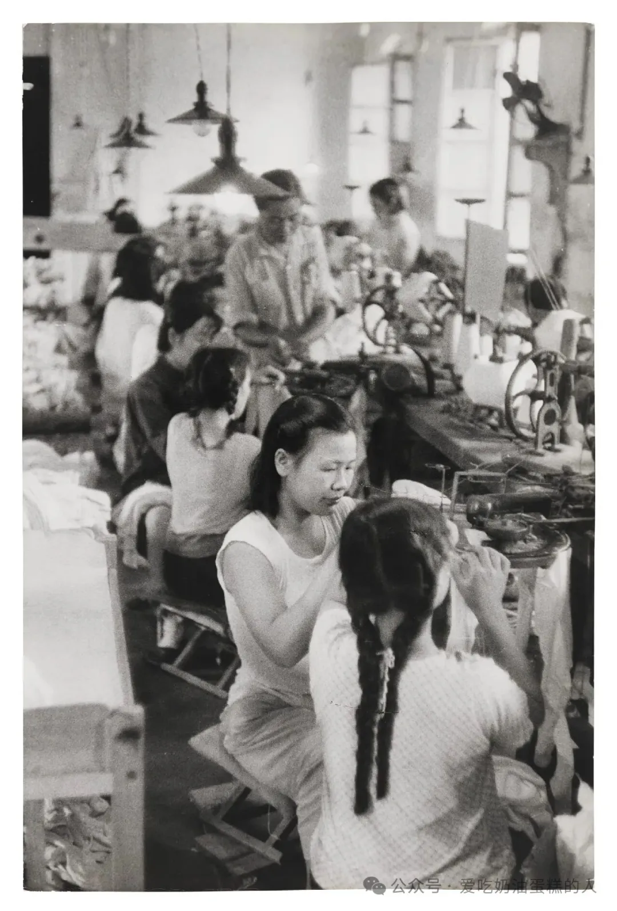
1958年7月，北京监狱，女性在押人员在缝纫车间劳动。摄影：亨利·卡蒂埃-布列松（Henri Cartier-Bresson）。图源：洛杉矶郡艺术博物馆（LACMA），© Henri Cartier-Bresson / Magnum Photos。
关于劳动与普通公民的讨论还揭示了这种「良性反抗话语」的一个关键构件：改造者坚信，非反革命性质的抵抗可以被教养消除。过程是渐进的，但对大多数人来说，毛泽东（1957a）认为思想改造终会产生效果：「改造得越多，越觉得需要改造」，最终「百分之九十以上的人会转而接受改造」。
证明旧社会究竟造成了多大伤害，以及证明共产党能够消除这种受害状态的原因和后果，都是革命修辞的核心。在教养机构里，干部必须说明收容人员确实抵抗改造，同时又必须证明自己工作有效。于是，非反革命抵抗在某种意义上有一个「有效期」。北京档案显示，这个有效期——也就是教养人员不再愿意把抵抗理解为无害现象的临界点——并不是固定不变的。比如，Lu Ming 和 Zhuang Ti 被移送公安局一年后，An Jiayin 同样攻击其他收容人员、同教养人员打斗，但教养院工作人员仍对他最终获得改造抱有希望。
即使到了1957年，《劳动教养决定》已经对那些表面看来顽固不化的抵抗者采取严厉立场，教养人员仍声称，他们能够容忍自己认定为非对抗性的反对。同一年，毛泽东（1957b）也重申类似立场，说「政府和人民之间仍然存在一定矛盾」。当《人民日报》解释这句话时，评论写道：「人民群众同他们的领导者之间的矛盾，在性质上不是对抗性的。」可是，到1957年，官方面对反抗的态度显然已经发生了变化。早先，教养人员几乎把所有抵抗都写成走向改造的自然且必要的一步。如今，他们越来越倾向于把抵抗看成偏离常态的证据。《劳动教养决定》也说明，民政系统的教养人员已经不再确信，自己的办法还能使任何一个尚未改造的收容人员发生变化。
国家把顽固的游民无产者重新分类，使他们在制度位置上更接近反革命分子，而非更像社会救济对象。这种判断不一定意味着那些尚未改造者最终无法改造。至少在制度理论上，劳动教养仍包含「教育改造」的目标。但是，毛泽东已经暗示，大约有10％的人可能永远不会接受改造，教养人员似乎也开始怀疑，自己管理的人中至少有一些属于这个少数。到1957年，教养人员及其上级宣称，「绝大多数」乞丐、妓女和小偷都已经改造成功。公安档案和其他材料确实表明，这种说法有所夸大。然而，当共产党领导层对群众的性质和行为作出判断时，这些判断无论是否夸张，都会形成强有力的规范标准。
关于抵抗，党的路线很清楚：反对政府是对社会和政治变化的正常反应，是可以预期的，甚至是必要的，而且这种反对是多数人的特征。但群众得到了改造。未被改造者，在定义上就与这个多数群体区分开来。
1. 说明：英文原文的 BMA 指北京市档案馆（Beijing Municipal Archives）；下列条目已展开此缩写。
2. BGA（北京市公安局）. 1949. 「关于收容乞丐报告的意见」（Guanyu shourong qigai baogao de yijian）。北京市档案馆 196-2-191。
3. ——. 1950. 「呈」（Cheng）。北京市档案馆 2-2-43。
4. ——. 1988. Beijing fengbi jiyuan jishi（《北京封闭妓院纪实》）。北京：中国和平出版社。
5. 毕仰高（Lucien Bianco）. 1999. 「弱者的武器：一种批判性审视」（The Weapons of the Weak: A Critical View）。China Perspectives 22: 4–16。
6. BJC（北京市人民监察委员会）. 1953. 「一九五三年第一季度工作报告」（Yijiuwusan nian diyi jidu gongzuo baogao）。北京市档案馆 14-2-15。
7. BJJ（北京市社会救济分会）. 1953a. 「劳动教育所部分收容人经常捣乱」（Laodong jiaoyusuo bufen shourongren jingchang dao luan）。北京市档案馆 14-2-88。
8. ——. 1953b. 「生产教养院1953年第二季度工作总结报告」（Shengchan jiaoyangyuan 1953 nian dier jidu gongzuo zongjie baogao）。北京市档案馆 14-2-15。
9. ——. 1953c. 「生产教养院各所收容人逃跑情况及处理意见报告」（Shengchan jiaoyangyuan ge suo shourongren taopao qingkuang ji chuli yijian baogao）。北京市档案馆 14-2-88。
10. ——. 1954a. 「1954年工作计划上半年举行情况报告」（1954 nian gongzuo jihua shang bannian juxing qingkuang baogao）。北京市档案馆 14-2-53。
11. ——. 1954b. 「两周工作报告」（Liang zhou gongzuo baogao），8月2—14日。北京市档案馆 14-2-48。
12. ——. 1954c. 「每周工作汇报」（Mei zhou gongzuo huibao），8月22—29日。北京市档案馆 14-2-48。
13. ——. 1954d. 「组织游民参加劳动生产的情况报告」（Zuzhi youmin canjia laodong shengchan de qingkuang baogao）。北京市档案馆 14-2-48。
14. BJZ（北京市地方志编纂委员会）. 1999. Beijing zhi, zheng fa zhi, jianyu laojiao zhi（《北京志·政法志·监狱劳教志》）。北京：北京出版社。
15. BMZ（北京市民政局）. 1949a. 「1949年工作总结」（1949 nian gongzuo zongjie）。北京市档案馆 2-1-55。
16. ——. 1949b. 「北平市疏散人口工作、处理妓女工作」（Beiping shi shusan renkou gongzuo, chuli jinü gongzuo）。北京市档案馆 196-2-20。
17. ——. 1949c. 「处理乞丐暂行办法」（Chuli qigai zanxing banfa）。北京市档案馆 196-2-191。
18. ——. 1949d. 「关于处理乞丐问题与妓女问题的工作布置」（Guanyu chuli qigai wenti yu jinü wenti de gongzuo buzhi）。北京市档案馆 196-2-191。
19. ——. 1949e. 「收容乞丐工作汇报」（Shourong qigai gongzuo huibao）。北京市档案馆 196-2-191。
20. ——. 1949f. 「收容乞丐工作总结」（Shourong qigai gongzuo zongjie）。北京市档案馆 196-2-20。
21. ——. 1949g. 「为中国解放区救济总会展开全国救济代表会议对本市慈善救济团体调查材料」（Wei Zhongguo jiefangqu jiuji zonghui zhankai quanguo jiuji daibiao huiyi dui benshi cishan jiuji tuanti diaocha cailiao）。北京市档案馆 196-2-237。
22. ——. 1950a. 「报告」（Baogao）。北京市档案馆 2-2-40。
23. ——. 1950b. 「北京市处理妓女工作总结」（Beijing shi chuli jinü gongzuo zongjie）。北京市档案馆 2-2-40。
24. ——. 1950c. 「国内公私立救济福利团体」（Guonei gongsili jiuji fuli tuanti）。北京市档案馆 196-2-237。
25. ——. 1950d. 「函」（Han）。北京市档案馆 196-2-191。
26. ——. 1950e. 「一九五〇年九月收容乞丐工作总结」（Yijiuwuling nian jiu yue shourong qigai gongzuo zongjie）。北京市档案馆 196-2-199。
27. ——. 1951a. 「处理乞丐暂行办法」（Chuli qigai zanxing banfa）。北京市档案馆 2-3-57。
28. ——. 1951b. 「训练游民乞丐工作总结」（Xunlian youmin qigai gongzuo zongjie）。北京市档案馆 196-2-20。
29. ——. 1952. 「北京市乞丐、野妓、流氓、小偷情况报告」（Beijing shi qigai, yeji, liumang, xiaotou qingkuang baogao）。北京市档案馆 196-2-20。
30. ——. 1953a. 「关于救济分会所属收容教养单位表现极坏的收容人」（Guanyu jiujifenhui suoshu shourong jiaoyang danwei biaoxian ji huai de shourongren）。北京市档案馆 14-2-88。
31. ——. 1953b. 「每周工作汇报」（Mei zhou gongzuo huibao）。北京市档案馆 14-2-87。
32. ——. 1954a. 「对收容人员管理教育实行办法」（Dui shourong renyuan guanli jiaoyu shixing banfa）。北京市档案馆 14-1-51。
33. ——. 1954b. 「关于临时收容所收容处理情况报告」（Guanyu linshi shourongsuo shourong chuli qingkuang baogao）。北京市档案馆 14-1-51。
34. ——. 1954c. 「整顿生产教养工作总结报告」（Zhengdun shengchan jiaoyang gongzuo zongjie baogao）。北京市档案馆 14-1-51。
35. ——. 1956. 「关于北京市社会救济福利工作情况报告」（Guanyu Beijing shi shehui jiuji fuli gongzuo qingkuang baogao）。北京市档案馆 196-1-88。
36. BSW（中共北京市委员会）. 1949a. 「关于封闭妓院情况给中央华北局的报告」（Guanyu fengbi jiyuan qingkuang jie zhongyang huabeiju de baogao）。北京市档案馆，1988。
37. ——. 1949b. 「中共北平市委关于收容乞丐工作报告」（Zhonggong Beiping shiwei guanyu shourong qigai gongzuo baogao）。北京市档案馆，1988。
38. ——. 1953. 「市救济分会劳动教育所部分收容人经常捣乱」（Shi jiuji fenhui laodong jiaoyu suo bufen shourongren jingchang daoluan）。北京市档案馆 14-2-88。
39. ——. 1958. 「第三十二次行政会议记录」（Di sanshier ci xingzheng huiyi jilu）。北京市档案馆 2-10-51。
40. BZF（北京市人民政府）. 1950a. 「通知」（Tongzhi）。北京市档案馆 196-2-191。
41. ——. 1950b. 「指示」（Zhishi）。北京市档案馆 2-2-43。
42. ——. 1951. 「北京市人民政府第六十七次行政会议记录」（Beijing shi renmin zhengfu diliushiqi ci xingzheng huiyi jilu）。北京市档案馆 2-3-57。
43. 蔡永顺（Yongshun Cai）. 2000. 「国家与农民之间：地方干部与中国农村的统计报告」（Between State and Peasant: Local Cadres and Statistical Reporting in Rural China）。China Quarterly 163: 783–805。
44. 曹子西（Cao Zixi）, ed. 1994. Beijing tongzhi（《北京通史》），第10卷。北京：中国书店。
45. 陈怡君（Janet Chen）. 2011. Guilty of Indigence: The Urban Poor in China 1900–1953（《贫困有罪：中国城市贫民，1900—1953》）。Princeton, N.J.: Princeton University Press。
46. 陈其瑗（Chen Qiyuan）. 1951. 「城市社会救济福利工作报告」（Report on Social Relief and Welfare in the Cities / Chengshi jiuji fuli gongzuo baogao）。北京市档案馆 2-3-79。
47. 柯文（Paul A. Cohen）. 2003. 「分水岭之年的反思：中国历史中的1949年断裂」（Reflections on a Watershed Date: The 1949 Divide in Chinese History）。收入 华志建（Jeffrey N. Wasserstrom） 编，Twentieth-Century China: New Approaches（《二十世纪中国：新路径》），27–36。New York: Routledge。
48. CQ（重庆市社会救济分会）. 1953. 「关于组织收容教养人员劳动生产工作报告」（Guanyu zuzhi shourong jiaoyang renyuan laodong shengchan gongzuo baogao）。北京市档案馆 196-2-24。
49. 戴茂功（Neil Diamant）. 2009. Embattled Glory: Veterans, Military Families, and the Politics of Patriotism in China, 1949–2007（《受困的荣耀：退伍军人、军属与中国的爱国主义政治，1949—2007》）。New York: Rowman & Littlefield。
50. 冯客（Frank Dikötter）. 1997. 「解放后中国的犯罪与惩罚：1950年代北京一所监狱的囚犯」（Crime and Punishment in Post-Liberation China: The Prisoners of a Beijing Gaol in the 1950s）。China Quarterly 149: 147–59。
51. 董汝勤（Dong Ruiqin）. 1951. 「报告」（Baogao），6月7日。北京市档案馆 2-3-57。
52. 迈克尔·达顿（Michael Dutton）. 1992. Policing and Punishment in China: From Patriarchy to 「The People」（《中国的规制与惩罚：从父权本位到人民本位》）。Cambridge: Cambridge University Press。
53. ——. 2005. Policing Chinese Politics: A History（《中国政治的治安化：一部历史》）。Durham, N.C.: Duke University Press。
54. DZG（《当代中国》丛书编辑部）. 1994. Dangdai Zhongguo minzheng（《当代中国民政》）。北京：当代中国出版社。
55. 傅礼门（Edward Friedman）、毕克伟（Paul G. Pickowicz）、塞尔登（Mark Selden）. 2005. Revolution, Resistance, and Reform in Village China（《中国乡村的革命、抵抗与改革》）。New Haven, Conn.: Yale University Press。
56. 傅华伶（Hualing Fu）. 2005. 「历史语境中的劳动教养」（Re-education through Labor in Historical Context）。China Quarterly 184: 811–30。
57. 高峥（James Z. Gao）. 2004. The Communist Takeover of Hangzhou: The Transformation of City and Cadre, 1949–1954（《接管杭州：城市改造与干部蝉变（1949—1954）》）。Honolulu: University of Hawai‘i Press。
58. Guha, Ranajit. 1988. 「反叛乱的散文」（The Prose of Counter-Insurgency）。收入 Ranajit Guha and Gayatri Chakravorty Spivak 编，Selected Subaltern Studies（《底层研究选集》），45–86。Oxford: Oxford University Press。
59. GWY（国务院）. 1957. 「中华人民共和国国务院关于劳动教养问题的决定」（Decision of the State Council of the People’s Republic of China Relating to the Problems of Reeducation Through Labor）。收入《中华人民共和国法规汇编》，第6卷，243–44。北京：法律出版社。
60. Haynes, Douglas, and Gyan Prakash. 1991. Contesting Power: Resistance and Everyday Social Relations in South Asia（《争夺权力：南亚的抵抗与日常社会关系》）。Berkeley: University of California Press。
61. 安克强（Christian Henriot）. 1995. 「『关闭』：上海卖淫业的废除，1949—1958」（‘La Fermeture’: The Abolition of Prostitution in Shanghai, 1949–58）。China Quarterly 142: 148–67。
62. 贺萧（Gail Hershatter）. 1993. 「底层者的回话：底层理论与中国史反思」（The Subaltern Talks Back: Reflections on Subaltern Theory and Chinese History）。Positions 1: 107–8。
63. ——. 1997. Dangerous Pleasures: Prostitution and Modernity in Twentieth-Century Shanghai（《危险的愉悦：20世纪上海的娼妓问题与现代性》）。Berkeley: University of California Press。
64. ——. 2002. 「记忆的性别：中国农村妇女与1950年代」（The Gender of Memory: Rural Chinese Women and the 1950s）。Signs: Journal of Women in Culture and Society 28(1): 43–70。
65. HMZ（华北民政部）. 1949. 「国际救济委员会的文书材料」（Guoji jiuji weiyuanhui de wenshu cailiao）。北京市档案馆 196-2-250。
66. 黄鸿山（Huang Hongshan）、王卫平（Wang Weiping）. 2010. 「从『教养兼施』到『劳动教养』：中国劳动教养制度起源新探」（Cong ‘jiaoyang jianshi’ dao ‘laodong jiaoyang’: Zhongguo laodong jiaoyang zhidu qiyuan xintan）。《河北学刊》5: 73–80。
67. 康正果（Kang, Zhengguo）. 2005. Confessions: An Innocent Life in Communist China（《自白：共产主义中国的一段无辜人生》）。Susan Wilf 译。New York: Norton。
68. 李金龙（Li Jinlong）, ed. 2000. Bada hutong（《八大胡同》）。郑州：中原农民出版社。
69. 李培义（Li Peiyi）. 1987. 「怀念开封的生产教养院」（Huainian Kaifeng de shengchan jiaoyang yuan）。收入《河南文史资料》24: 187–89。郑州。
70. 李润山（Li Runshan）. 1995. 「北京收容野妓暗娼」（Beijing shourong yeji anchang）。《人民公安》3: 29–30。
71. 李小尉（Li Xiaowei）. 2007. 「新中国成立初期北京乞丐的救济与治理」（Xin Zhongguo chengli chuqi Beijing qigai de jiuji yu zhili）。《北京社会科学》5: 61–67。
72. 梁克（Liang Ke）. 1999. 「1949北京改造妓女纪实」（1949 Beijing gaizao jinü jishi）。《中国社会导刊》10: 8–11。
73. 廖胜平（Liao Shengping）. 2009a. 「北平解放初期对乞丐的收容和改造」（Beiping jiefang chuqi dui qigai de shourong he gaizao）。《北京人民警察学院学报》5: 27–33。
74. ——. 2009b. 「新中国建立初期北京解决娼妓问题述论」（Xin Zhongguo jinli chuqi Beijing jiejue changji wenti shulun）。《中共桂林市委党校学报》9: 4。
75. 刘宗仁（Liu Zongren）. 1995. Hard Time: Thirty Months in a Chinese Labor Camp（《苦役：在中国劳改营的三十个月》）。San Francisco: China Books and Periodicals。
76. 马维纲（Ma Weigang）. 1993. Jin chang jin du（《禁娼禁毒》）。北京：警官教育出版社。
77. 马若德（Roderick MacFarquhar）、沈迈克（Michael Schoenhals）. 2006. Mao’s Last Revolution（《毛泽东最后的革命》）。Cambridge, Mass.: Harvard University Press。
78. 毛泽东（Mao Zedong）. 1928. 「井冈山前委对中央的报告」（Jingganshan qianwei dui zhongyang de baogao）。收入竹内实编《毛泽东集》，第2卷，37。东京：苍苍社。
79. ——. 1939. 「中国革命和中国共产党」（Zhongguo geming he Zhongguo gongchandang）。收入竹内实编《毛泽东集》，第2卷，25–66。东京：苍苍社。
80. ——. 1957a. 「打退资产阶级右派的进攻」（Datui zichan jieji youpai de jingong）。收入《毛泽东选集》第5卷，469–70。北京：人民出版社。
81. ——. 1957b. 「关于正确处理人民内部矛盾的问题，讲话稿」（Guanyu zhengque chuli renmin neibu maodun de wenti, jianghua gao）。收入《毛主席文献三十篇》，93–112。北京：北京特殊钢厂宣传勤务组编印。
82. 米世奇（Mi Shiqi）、高长武（Gao Changwu）. 2007. 「解放初期北京市妇女生产教养院的工作：杨蕴玉访谈录」（Jiefang chuqi Beijing shi funü shengchan jiaoyangyuan de gongzuo: Yang Yunyu fangtan lu）。《党的文献》1: 42–43。
83. 余凯思（Klaus Mühlhahn）. 2009. Criminal Justice in China: A History（《中国刑事司法史》）。Cambridge, Mass.: Harvard University Press。
84. MZB（民政部）. 2003. Zhonghua Renmin Gongheguo minzhengbu dashiji（《中华人民共和国民政部大事记》）。北京：中国社会出版社。
85. NCK（《内部参考》）. 1951. 11月29日，第90页。
86. ——. 1952a. 9月2日，第33–34页。
87. ——. 1952b. 10月8日，第72–76页。
88. ——. 1953a. 6月12日。
89. ——. 1953b. 6月18日。
90. NJ（南京市民政局）. 1953. 「各教养生产单位管理教育工作暂行办法」（Ge jiaoyang shengchan danwei guanli jiaoyu gongzuo zanxing banfa）。北京市档案馆 196-2-24。
91. 欧博文（Kevin O’Brien）、李连江（Lianjiang Li）. 2006. Rightful Resistance in Rural China（《中国农村的依法抗争》）。New York: Cambridge University Press。
92. 戴慕珍（Jean C. Oi）. 1989. State and Peasant in Contemporary China: The Political Economy of Village Government（《当代中国的国家与农民：乡村政府的政治经济学》）。Berkeley: University of California Press。
93. 彭真（Peng Zhen）. 1941. 「晋察冀边区各项具体政策及党的建设经验」（Jin-Cha-Ji bianqu gexiang juti zhengce ji dang de jianshe jingyan）。收入《彭真文选》，第5页。北京：人民出版社。
94. 裴宜理（Elizabeth Perry）、塞尔登（Mark Selden）. 2000. Chinese Society: Change, Conflict, and Resistance（《中国社会：变迁、冲突与抵抗》）。New York: Routledge。
95. 卜宁（Pu Ning）. 1994. Red in Tooth and Claw: Twenty-six Years in Communist Chinese Prisons（《血色爪牙：在中国共产党监狱中的二十六年》）。New York: Grove Press。
96. 《人民日报》. 1953. 12月1日。
97. ——. 1957. 4月13日。
98. 罗芙芸（Ruth Rogaski）. 2002. 「自然、毁灭与现代性：重访中国朝鲜战争细菌战经验」（Nature, Annihilation, and Modernity: China’s Korean War Germ-Warfare Experience Revisited）。Journal of Asian Studies 61(2): 381–415。
99. 阮清华（Ruan Qinghua）. 2008. 「归位：建国初期上海游民改造对象分析」（Guiwei: jianguo chuqi Shanghai youmin gaizao duixiang fenxi）。《史林》1: 159–67。
100. ——. 2009. 「建国初期上海废娼运动再认识」（Jianguo chuqi Shanghai fei chang yundong zai renshi）。《华东师范大学学报》4: 30–37。
101. 施拉姆（Stuart Schram）. 1969. The Political Thought of Mao Zedong（《毛泽东的政治思想》）。Cambridge: Cambridge University Press。
102. 施拉姆（Stuart Schram）、Nancy Hodes. 1992. Mao’s Road to Power: Revolutionary Writings, 1912–1949（《毛泽东通向权力之路：革命著作，1912—1949》）。Armonk, N.Y.: East Gate。
103. 詹姆斯·C. 斯科特（James C. Scott）. 1987. Weapons of the Weak: Everyday Forms of Peasant Resistance（《弱者的武器：农民反抗的日常形式》）。New Haven, Conn.: Yale University Press。
104. ——. 1990. Domination and the Arts of Resistance: Hidden Transcripts（《支配与抵抗艺术：潜隐剧本》）。New Haven, Conn.: Yale University Press。
105. 司马晋（James D. Seymour）、Richard Anderson. 1998. New Ghosts Old Ghosts: Prisons and Labor Reform Camps in China（《新鬼旧鬼：中国的监狱与劳改营》）。Armonk, N.Y.: M. E. Sharpe。
106. 汤水清（Tang Shuiqing）. 2007. 「新中国成立初期游民的安置和改造」（Xin Zhongguo chengli chuqi youmin de anzhi he gaizao）。《江西社会科学》11。
107. 夏竹丽（Judith Shapiro）. 2001. Mao’s War on Nature: Politics and the Environment in Revolutionary China（《毛泽东对自然的战争：革命中国的政治与环境》）。Cambridge: Cambridge University Press。
108. 许慧文（Vivienne Shue）. 1988. The Reach of the State: Sketches of the Chinese Body Politic（《国家的触角：中国政治共同体素描》）。Stanford, Calif.: Stanford University Press。
109. 阿明达·M. 史密斯（Aminda M. Smith）. 2013. Thought Reform and China’s Dangerous Classes: Reeducation, Resistance, and the People（《思想改造与中国的危险阶级：再教育、抵抗与人民》）。Lanham, Md.: Rowman & Littlefield。
110. Smith, Stephen A. 2006. 「地方干部遭遇超自然：中华人民共和国的『神水』政治，1949—1966」（Local Cadres Confront the Supernatural: The Politics of Holy Water (Shenshui) in the PRC, 1949–1966）。China Quarterly 163: 999–1022。
111. Spivak, Gayatri Chakravorty. 1988. 「底层人能说话吗？」（Can the Subaltern Speak?）。收入 Cary Nelson and Lawrence Grossberg 编，Marxism and the Interpretation of Culture（《马克思主义与文化阐释》），271–313。Urbana: University of Illinois Press。
112. 朱莉（Julia Strauss）. 2002. 「家长制恐怖：镇压反革命运动与中华人民共和国政权巩固，1950—1953」（Paternalist Terror: The Campaign to Suppress Counterrevolutionaries and Regime Consolidation in the People’s Republic of China 1950–1953）。Comparative Studies in Society and History 44(1): 80–105。
113. TMZ（天津市民政局）. 1951. 「游民改造工作总结报告，收容乞丐工作」（Youmin gaizao gongzuo zongjie baogao, Shourong qigai gongzuo）。《天津市政》25: 18–19。
114. 安戈（Jonathan Unger）. 1989. 「革命后中国的国家与农民」（State and Peasant in Post-Revolution China）。Journal of Peasant Studies 17(1): 114–36。
115. 魏纶（Philip F. Williams）、吴燕娜（Yenna Wu）. 2004. The Great Wall of Confinement: The Chinese Prison Camp in Contemporary Fiction and Reportage（《万里大墙：中共劳改营的跨学科研究》）。Berkeley: University of California Press。
116. 吴弘达（Wu, Harry Hongda）. 1992. Laogai: The Chinese Gulag（《劳改：中国的古拉格》）。Ted Slingerland 译。Boulder, Colo.: Westview Press。
117. 吴弘达（Wu, Harry Hongda）, and Carolyn Wakeman. 1994. Bitter Winds: A Memoir of My Years in China’s Gulag（《苦风：我在中国古拉格的岁月回忆录》）。New York: J. Wiley。
118. 伍云甫（Wu Yunfu）. 1953. 「关于整顿生产教养工作的报告」（Guanyu zhengdun shengchan jiaoyang gongzuo de baogao）。北京市档案馆 196-2-33。
119. Yang, Anand A. 2007. 「土匪与国王：早期殖民印度的道德权威与抵抗」（Bandits and Kings: Moral Authority and Resistance in Early Colonial India）。Journal of Asian Studies 66(4): 881–96。
120. 杨敏（Yang Min）. 2010. 「1949妓女的解放」（1949 jinü de jiefang）。《中国新闻周刊》，11月22日，76–78。
121. ZBQ（《中国大百科全书》）. 1991. 「社会学」。北京：中国大百科全书出版社。
122. 张洁珣（Zhang Jiexun）. [1950] 1988. 「怎样对学生进行教育」（Zenyang dui xuesheng jinxing jiaoyu）。收入北京市公安局编《北京封闭妓院纪实》。北京：中国和平出版社。
123. Zhao Xiyue. 1953. 「城市社会救济工作报告」（Chengshi shehui jiuji gongzuo baogao），11月16日。北京市档案馆 196-2-24。
124. 周晓（Kate X. Zhou）. 1996. How the Farmers Changed China: Power of the People（《农民如何改变中国：人民的力量》）。New York: Perseus。
125. ZMD（《中华人民共和国民政部大事记》）. 2003. 北京：中国社会出版社。
126. ZNW（中央人民政府内务部）. 1953. 「指示」（Zhishi）。北京市档案馆 196-2-212。
127. ——. 1956. 「关于安置改造城市游民工作的指示」（Guanyu anzhi gaizao chengshi youmin gongzuo de zhishi）。《中华人民共和国国务院公报》28: 690–94。
128. ZSH（中国人民救济总会上海分会）. 1953. 「生产教养院收容人员管理办法，草案」（Shengchan jiaoyangyuan shourong renyuan guanli banfa, caoan）。北京市档案馆 196-2-24。
129. ZZ（郑州市）. 1953. 「生产教养院生产管理教育暂行办法，草案」（Shengchan jiaoyang yuan shengchan guanli jiaoyu zanxing banfa, caoan）。北京市档案馆 196-2-24。
往期回顾
━━━━◆━━━━
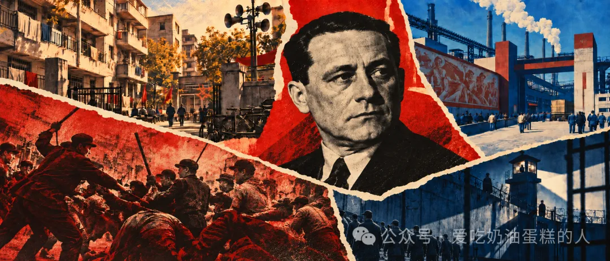
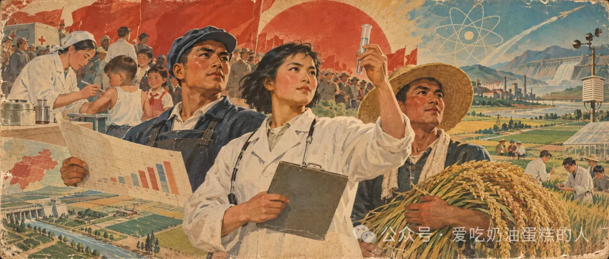
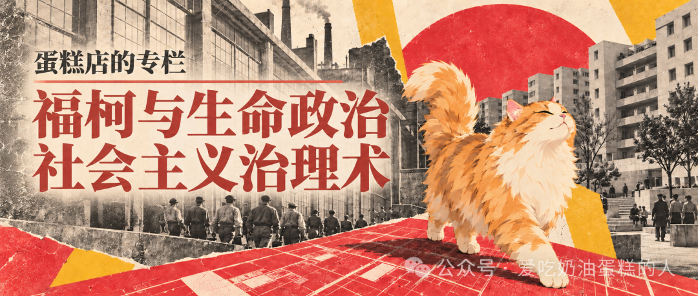